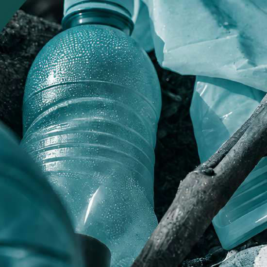
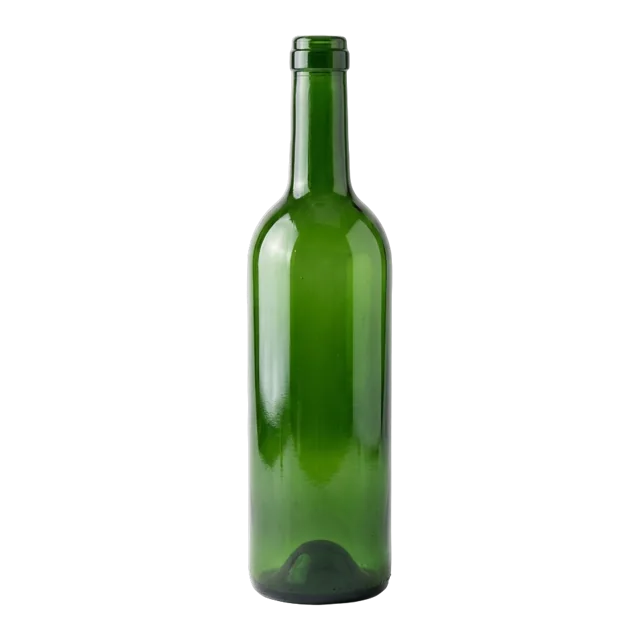
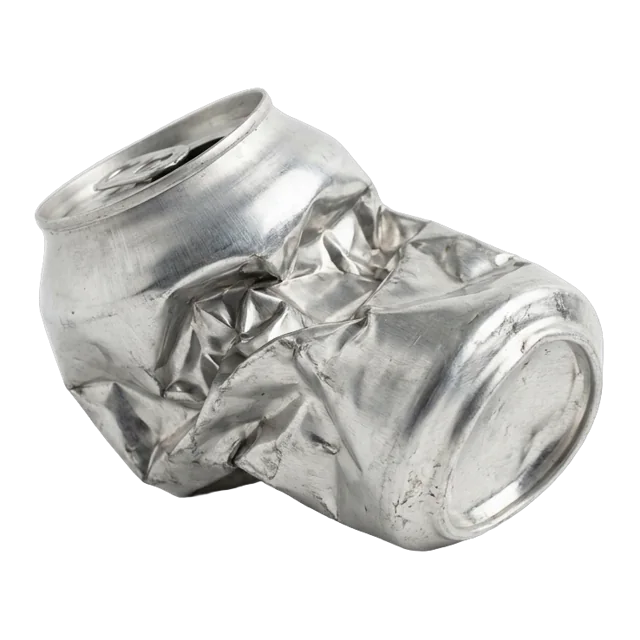
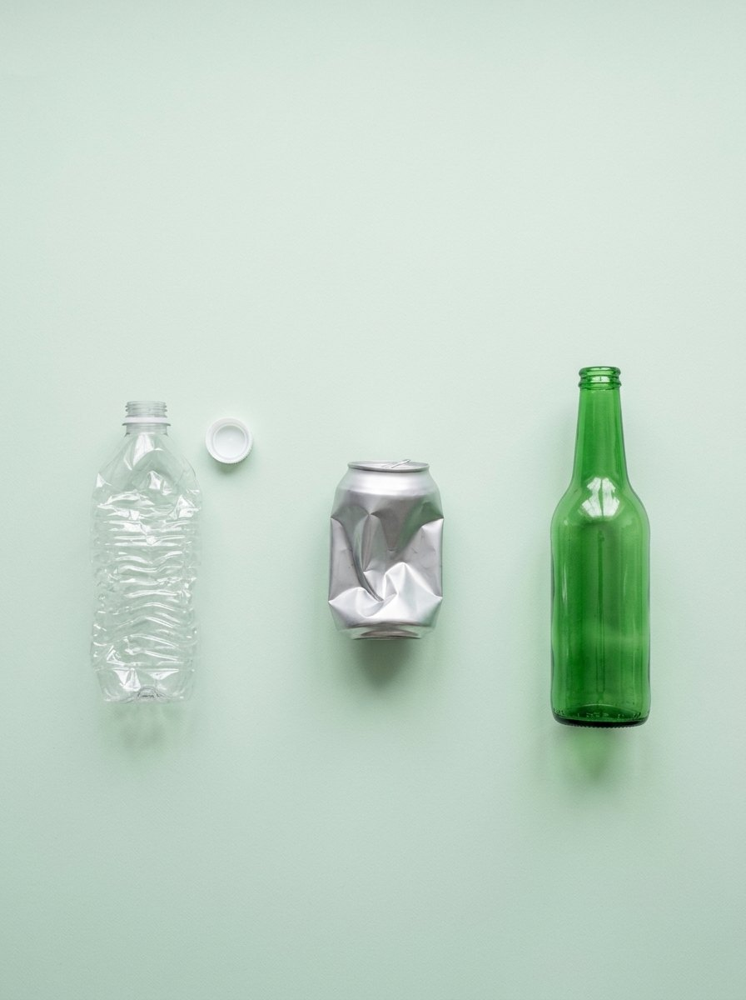

Отходы из общих баков поступают на завод вместе. Здесь мы сортируем их и отделяем полезные материалы. Стеклянные бутылки в Липецке можно сдать отдельно — найти контейнер на карте.
Но то, в каком состоянии упаковка попадает в контейнер, тоже имеет значение. Несколько простых действий дома помогают ей лучше пройти сортировку, а некоторым материалам — стать ресурсом.

Гав! Я Техногрунт. Живу здесь и знаю, что происходит с отходами после контейнера. Сейчас покажу, что можно сделать ещё дома, а что дальше делаем уже мы.
Освободи упаковку от воды, молока, масла и другой жидкости. Остатки могут загрязнить соседние отходы и испортить материалы, которые ещё можно отправить на переработку.
Открути крышку с бутылки, сними пульверизатор с флакона. Если детали сделаны из разных материалов, заранее раздели их. Так на линии их можно будет сортировать отдельно.
Сомни пластиковую бутылку, чтобы она занимала меньше места и удобнее проходила дальнейшую сортировку. Пакет с отходами оставь открытым, так его содержимое проще освободить на линии.

На сортировочной линии через общий поток проходят тысячи упаковок. Чем лучше материал подготовлен заранее, тем проще его распознать, отделить и направить дальше.
То, что можно сделать дома за несколько секунд, облегчает дальнейшую сортировку на линии.
В Экотехнопарке общий поток проходит несколько этапов сортировки. Оборудование и сотрудники линии помогают отделить материалы, которые можно подготовить к дальнейшей переработке.

Отбираем ПЭТ, ПНД, ПВД, полистирол, АБС, пакеты и плёнку.

Отбираем стеклянные бутылки, банки, флаконы и другой стеклобой.
Целое стекло безопаснее для сотрудников сортировочной линии и удобнее для дальнейшей сортировки.

Так банку проще увидеть и отобрать из общего потока.
Картон, макулатуру и тетрапак линия отделяет от общего потока и передаёт на дальнейшую переработку. Приносить их отдельно не нужно.
Мокрую и жирную бумагу значительно сложнее вернуть в переработку.
Остатки еды и другие органические отходы можно отправлять в обычный контейнер. В Экотехнопарке органическую фракцию отделяют от общего потока и направляют на дальнейшую утилизацию: 35–40% потока идёт на компостирование.
При этом лучше по возможности сокращать количество пищевых отходов: планировать покупки, использовать продукты полностью и не покупать больше, чем успеешь съесть.
Не каждый предмет должен попадать в общий поток. Для опасных, крупногабаритных и некоторых специальных видов отходов предусмотрены отдельные способы обращения.
Экотехнопарк не принимает их как отдельное вторсырьё. Старую кастрюлю или сковородку можно отправить в обычный контейнер без дополнительной упаковки. Дальше они проходят через общий поток.
Если вещь ещё пригодна для использования, лучше передать её дальше: в благотворительный проект, пункт сбора вещей или тому, кому она нужна.
Для начала достаточно нескольких привычек:
А дальше поток поступает к нам: мы разделяем его на линии, отбираем полезные материалы и готовим их к дальнейшей переработке.
Техногрунт подготовил 10 вопросов о привычках, которые начинаются ещё дома. Ошибиться можно. Для этого он здесь и сидит.
10 главных правил на одном листе А4. Можно сохранить, распечатать и больше не вспоминать каждый раз, куда деть крышку или зачем сминать бутылку.
